5 Data Analysis
5.1 Sector Weights
First, sector weights were calculated over time for both EUSA and USMV. Plots were made by sector and displayed to compare the relative weights of EUSA and USMV.
Sector Weight Summary Statistics:
data(usa_percent)## Warning in data(usa_percent): data set 'usa_percent' not founddata(minvol_percent)## Warning in data(minvol_percent): data set 'minvol_percent' not found## Summary statistics of EUSA sector weights
head(usa_percent)## sector_name sector_count total percent date
## 1 Cash and/or Derivatives 2 631 0.003169572 2017-01-05
## 2 Consumer Discretionary 106 631 0.167987322 2017-01-05
## 3 Consumer Staples 43 631 0.068145800 2017-01-05
## 4 Energy 44 631 0.069730586 2017-01-05
## 5 Financials 84 631 0.133122029 2017-01-05
## 6 Health Care 71 631 0.112519810 2017-01-05tail(usa_percent)## sector_name sector_count total percent date
## 827 Information Technology 79 585 0.135042735 2011-10-31
## 828 Materials 33 585 0.056410256 2011-10-31
## 829 Real Estate 0 585 0.000000000 2011-10-31
## 830 S-T Securities 1 585 0.001709402 2011-10-31
## 831 Telecommunications 12 585 0.020512821 2011-10-31
## 832 Utilities 35 585 0.059829060 2011-10-31summary(usa_percent)## sector_name sector_count total
## Cash and/or Derivatives: 64 Length:832 Length:832
## Consumer Discretionary : 64 Class :character Class :character
## Consumer Staples : 64 Mode :character Mode :character
## Energy : 64
## Financials : 64
## Health Care : 64
## (Other) :448
## percent date
## Min. :0.00000 Min. :2011-10-31
## 1st Qu.:0.01426 1st Qu.:2013-02-21
## Median :0.06820 Median :2014-06-14
## Mean :0.07692 Mean :2014-06-14
## 3rd Qu.:0.12236 3rd Qu.:2015-10-07
## Max. :0.19293 Max. :2017-01-05
## ## Summary statistics of USMV sector weights
head(minvol_percent)## sector_name sector_count total percent date
## 1 Cash and/or Derivatives 2 186 0.01075269 2017-01-05
## 2 Consumer Discretionary 18 186 0.09677419 2017-01-05
## 3 Consumer Staples 24 186 0.12903226 2017-01-05
## 4 Energy 4 186 0.02150538 2017-01-05
## 5 Financials 21 186 0.11290323 2017-01-05
## 6 Health Care 33 186 0.17741935 2017-01-05tail(minvol_percent)## sector_name sector_count total percent date
## 827 Information Technology 19 127 0.149606299 2011-10-31
## 828 Materials 4 127 0.031496063 2011-10-31
## 829 Real Estate 0 127 0.000000000 2011-10-31
## 830 S-T Securities 1 127 0.007874016 2011-10-31
## 831 Telecommunications 7 127 0.055118110 2011-10-31
## 832 Utilities 9 127 0.070866142 2011-10-31summary(minvol_percent)## sector_name sector_count total
## Cash and/or Derivatives: 64 Length:832 Length:832
## Consumer Discretionary : 64 Class :character Class :character
## Consumer Staples : 64 Mode :character Mode :character
## Energy : 64
## Financials : 64
## Health Care : 64
## (Other) :448
## percent date
## Min. :0.00000 Min. :2011-10-31
## 1st Qu.:0.02235 1st Qu.:2013-02-21
## Median :0.06349 Median :2014-06-14
## Mean :0.07692 Mean :2014-06-14
## 3rd Qu.:0.13043 3rd Qu.:2015-10-07
## Max. :0.22222 Max. :2017-01-05
## Sector Weights for EUSA and USMV:
##
## Attaching package: 'mscidata'## The following objects are masked _by_ '.GlobalEnv':
##
## minvol, monthly_data, usa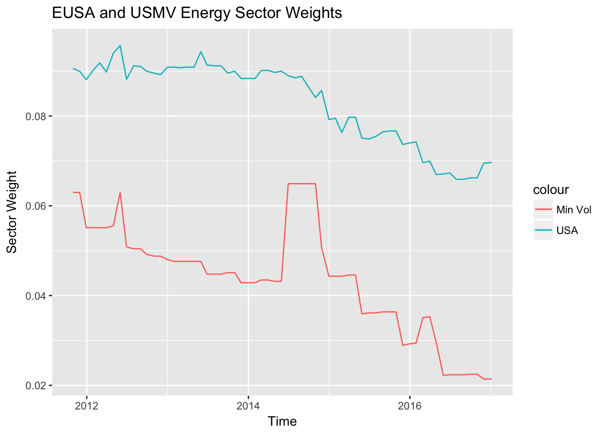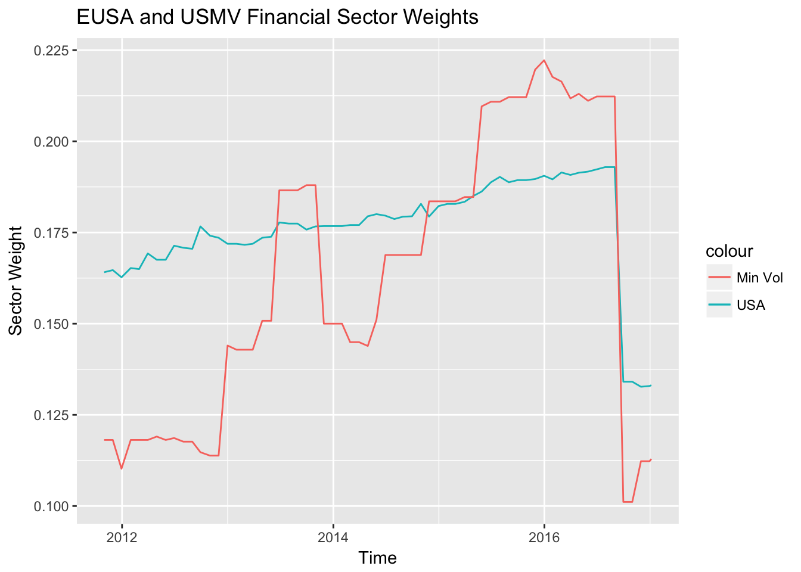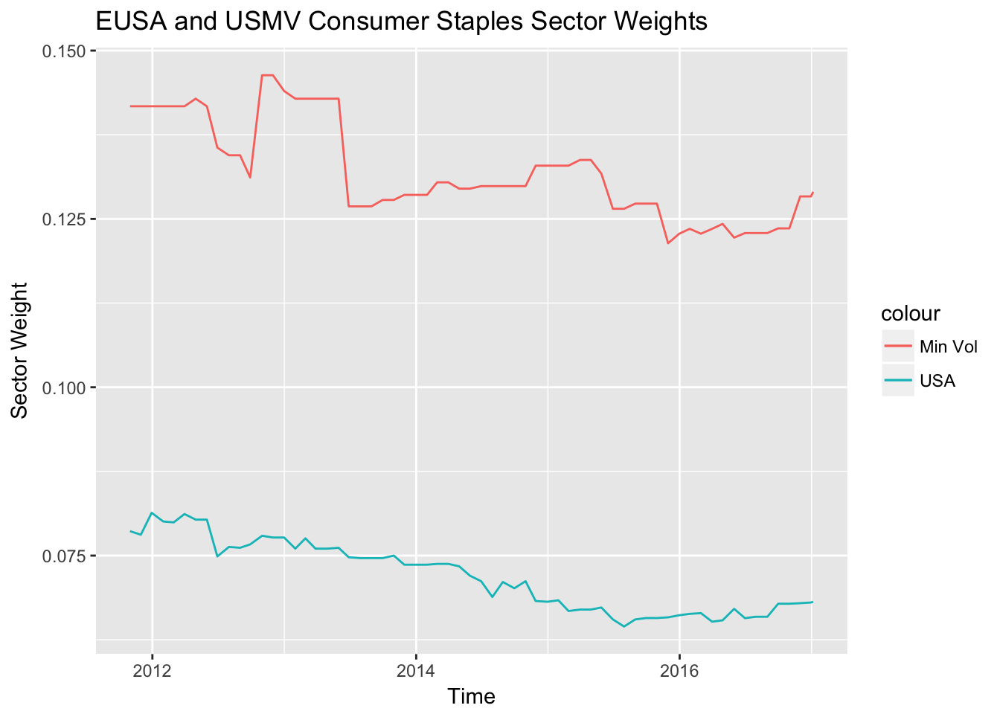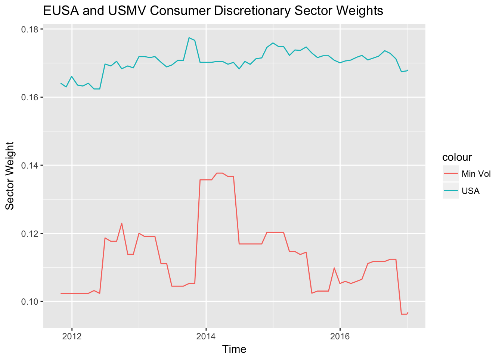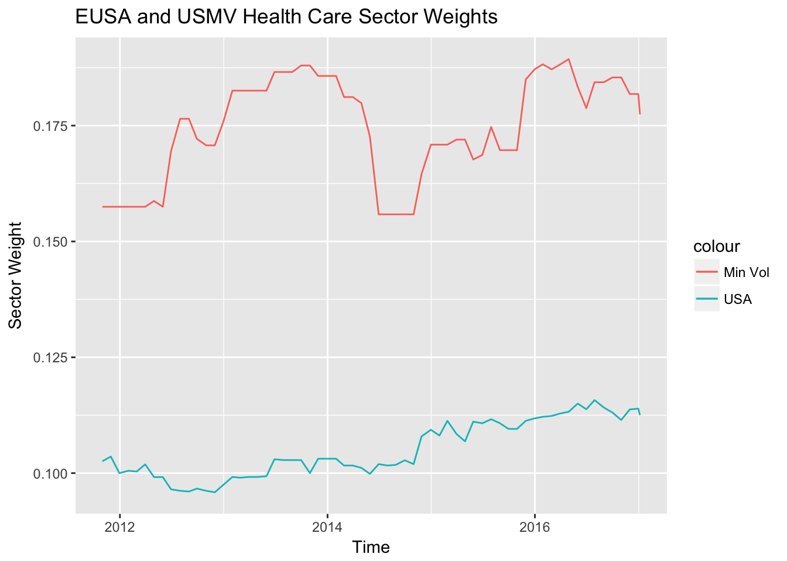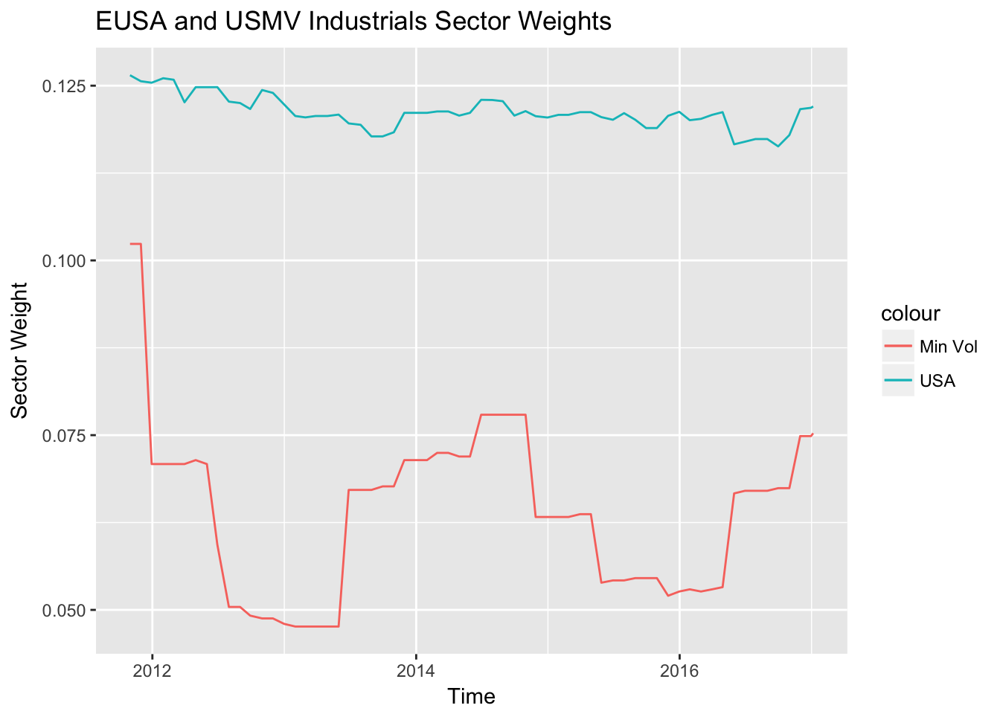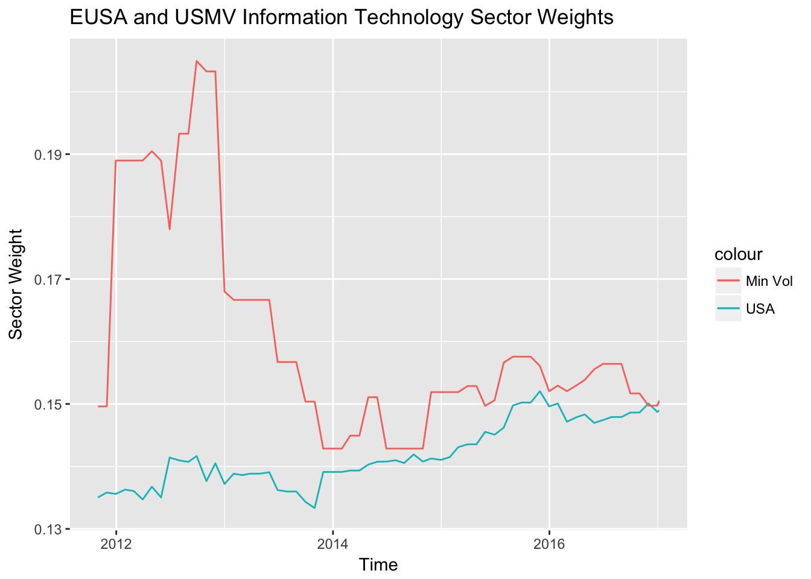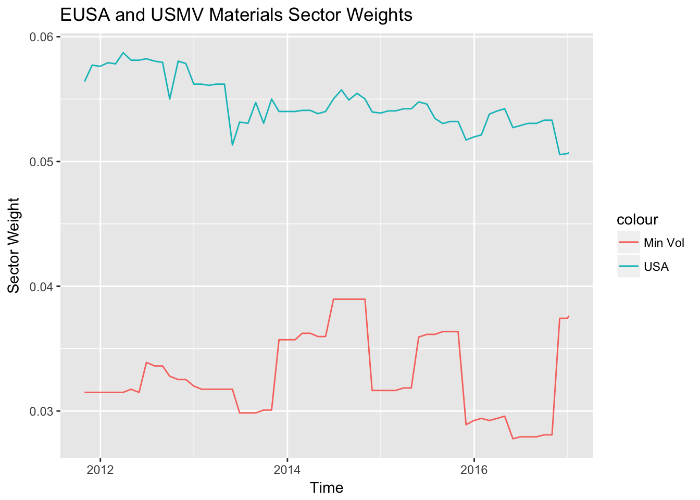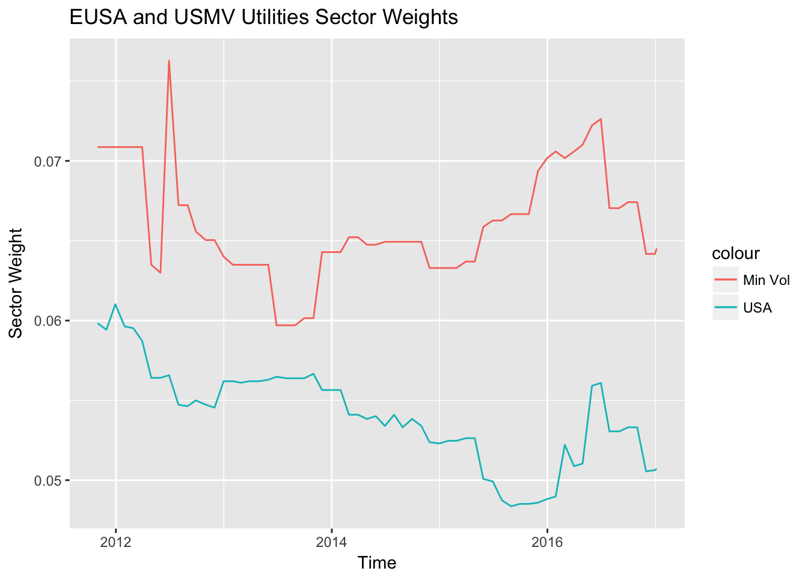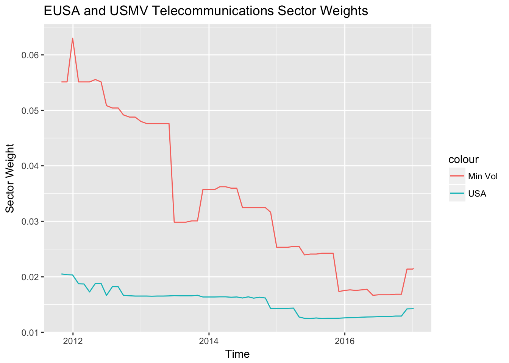
5.2 EUSA Constituent Trailing Volatilities
Data was collected from the past 10 years of the EUSA index. The data was collected from 12/31/2006 to 12/30/2016, was collected from WRDS for the 908 historical constituents of the USA Equal Weight (EUSA) index, of which USMV is derived. Each tickers’ 252-day (annual) trailing volatility was calculated and a month end spagetti plot was produced.
## Date Ticker Volatility
## 273 2008-01-31 A 2.289449
## 293 2008-02-29 A 2.357208
## 313 2008-03-31 A 2.660299
## 335 2008-04-30 A 3.017754
## 356 2008-05-30 A 3.028868
## 377 2008-06-30 A 2.921781## Date Ticker Volatility
## 1950385 2016-07-29 ZTS 2.718338
## 1950408 2016-08-31 ZTS 3.150629
## 1950429 2016-09-30 ZTS 3.363564
## 1950450 2016-10-31 ZTS 3.372530
## 1950471 2016-11-30 ZTS 3.436391
## 1950492 2016-12-30 ZTS 3.664053## Date Ticker Volatility
## Min. :2007-01-31 Length:82262 Min. : 0.0492
## 1st Qu.:2010-03-31 Class :character 1st Qu.: 2.4407
## Median :2012-07-31 Mode :character Median : 4.3057
## Mean :2012-07-12 Mean : 6.9432
## 3rd Qu.:2014-10-31 3rd Qu.: 7.4648
## Max. :2016-12-30 Max. :325.1242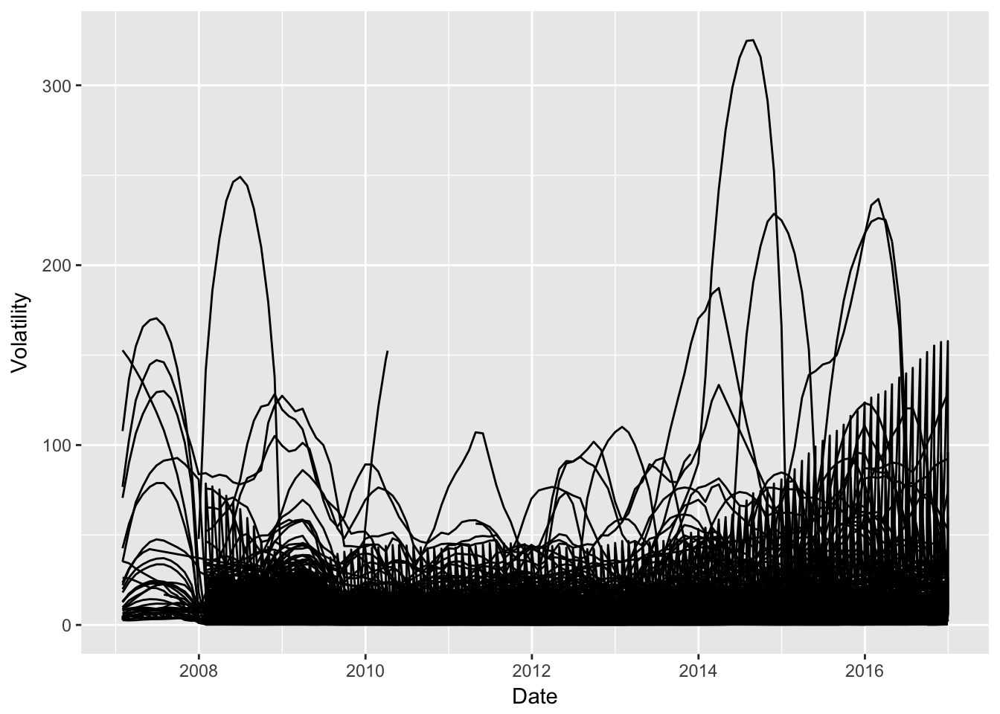
5.3 EUSA Constituent Trailing Betas
Data was collected from the past 10 years of the EUSA index. The data was collected from 12/31/2006 to 12/30/2016, was collected from WRDS for the 908 historical constituents of the USA Equal Weight (EUSA) index, of which USMV is derived. Each tickers’ 252-day (annual) trailing beta was calculated and a month end spagetti plot was produced.
## date ticker beta
## 1 <NA> <NA> NA
## 271 2008-01-31 A 0.9538067
## 291 2008-02-29 A 0.9473060
## 311 2008-03-31 A 0.9376670
## 333 2008-04-30 A 0.9588268
## 354 2008-05-30 A 0.9680630## date ticker beta
## 879817 2016-07-29 ZTS 1.0224673
## 902806 2016-08-31 ZTS 1.0302957
## 923805 2016-09-30 ZTS 0.9779760
## 944802 2016-10-31 ZTS 0.9830767
## 965801 2016-11-30 ZTS 0.9220281
## 986798 2016-12-30 ZTS 0.9549808## date ticker beta
## Min. :2007-04-30 Length:78532 Min. :-23.3438
## 1st Qu.:2010-04-30 Class :character 1st Qu.: 0.8204
## Median :2012-07-31 Mode :character Median : 1.0523
## Mean :2012-07-21 Mean : 1.0993
## 3rd Qu.:2014-10-31 3rd Qu.: 1.3295
## Max. :2016-12-30 Max. : 20.3256
## NA's :1 NA's :1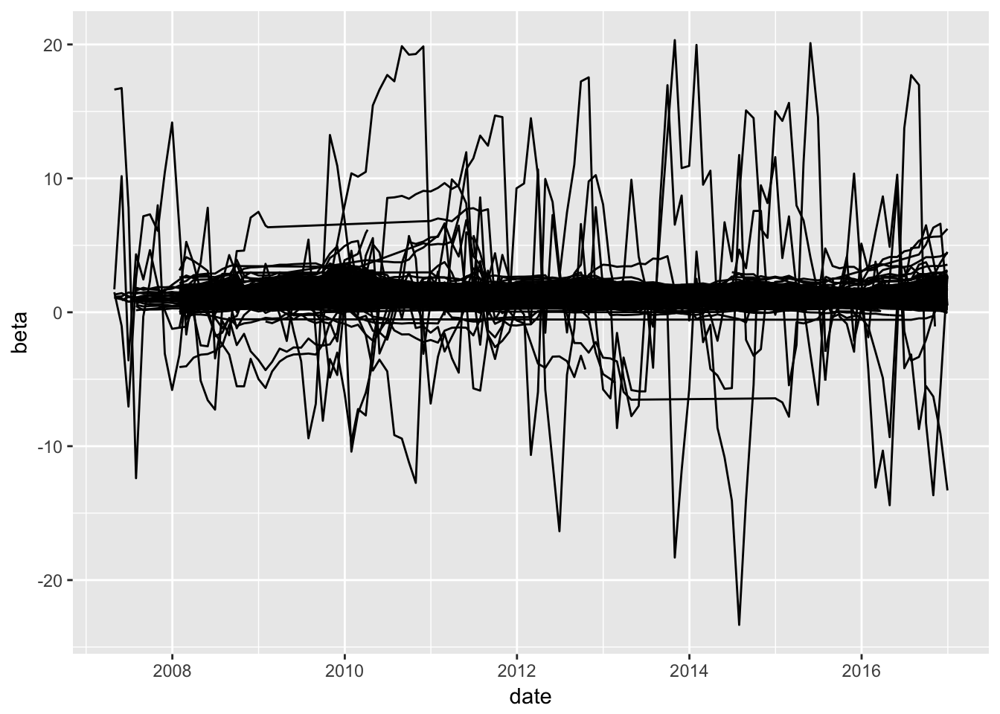
5.4 EUSA Constituent Price to Book Ratios
Data was collected from the past 10 years of the EUSA index. The data was collected from 12/31/2006 to 12/30/2016, was collected from WRDS for the 908 historical constituents of the USA Equal Weight (EUSA) index, of which USMV is derived. Each tickers’ Price to Book ratio was calculated in two ways, to ensure accuracy.
## gvkey Date Year Ticker Total_Assets BV_per_share
## 1 126554 2007-10-31 2007 A 7.554e+09 8.7405
## 2 126554 2008-10-31 2008 A 7.437e+09 7.3114
## 3 126554 2009-10-31 2009 A 7.612e+09 7.2397
## 4 126554 2010-10-31 2010 A 9.696e+09 9.3256
## 5 126554 2011-10-31 2011 A 9.057e+09 12.4371
## 6 126554 2011-10-31 2011 A 9.049e+09 NA
## Shares_Outstanding Total_Liabilities Market_Value Share_Price Book_Value
## 1 370000000 4.320e+09 13634500000 36.85 3233985000
## 2 350000000 4.878e+09 7766500000 22.19 2558990000
## 3 346148000 5.106e+09 8563701500 24.74 2506007676
## 4 346144000 6.460e+09 12045811200 34.80 3228000486
## 5 346382000 4.741e+09 12840380700 37.07 4307987572
## 6 NA NA 12840380700 NA NA
## PBR1 PBR2
## 1 4.216006 4.216006
## 2 3.034986 3.034986
## 3 3.417269 3.417269
## 4 3.731663 3.731663
## 5 2.980598 2.980598
## 6 NA NA## gvkey Date Year Ticker Total_Assets BV_per_share
## 17182 13721 2014-12-31 2014 ZTS 6.607e+09 2.6151
## 17183 13721 2014-12-31 2014 ZTS 6.588e+09 NA
## 17184 13721 2015-12-31 2015 ZTS 7.913e+09 2.1472
## 17185 13721 2015-12-31 2015 ZTS 7.913e+09 NA
## 17186 13721 2016-12-31 2016 ZTS 7.649e+09 3.0171
## 17187 13721 2016-12-31 2016 ZTS 7.649e+09 NA
## Shares_Outstanding Total_Liabilities Market_Value Share_Price
## 17182 501328000 5.270e+09 21572143800 43.03
## 17183 NA NA 21572143800 NA
## 17184 497400000 6.822e+09 23835408000 47.92
## 17185 NA NA 23835408000 NA
## 17186 492855000 6.150e+09 26382528200 53.53
## 17187 NA NA 26382528200 NA
## Book_Value PBR1 PBR2
## 17182 1311022853 16.45444 16.45444
## 17183 NA NA NA
## 17184 1068017280 22.31744 22.31744
## 17185 NA NA NA
## 17186 1486992820 17.74220 17.74220
## 17187 NA NA NA## gvkey Date Year Ticker
## Min. : 1045 2013-12-31:1283 Min. :2006 ACGL : 33
## 1st Qu.: 7146 2012-12-31:1277 1st Qu.:2009 AET : 33
## Median : 14824 2014-12-31:1275 Median :2011 AFL : 33
## Mean : 50895 2011-12-31:1265 Mean :2011 AIZ : 33
## 3rd Qu.: 65556 2015-12-31:1253 3rd Qu.:2014 AMG : 33
## Max. :294524 2010-12-31:1222 Max. :2016 ANTM : 33
## (Other) :9612 NA's :33 (Other):16989
## Total_Assets BV_per_share Shares_Outstanding
## Min. :0.000e+00 Min. :-1489600 Min. :0.000e+00
## 1st Qu.:3.912e+09 1st Qu.: 8 1st Qu.:1.010e+08
## Median :9.538e+09 Median : 15 Median :1.973e+08
## Mean :4.725e+10 Mean : 5311 Mean :4.654e+08
## 3rd Qu.:2.632e+10 3rd Qu.: 27 3rd Qu.:4.344e+08
## Max. :2.573e+12 Max. :16297416 Max. :2.906e+10
## NA's :2568 NA's :9284 NA's :9188
## Total_Liabilities Market_Value Share_Price
## Min. :0.000e+00 Min. :3.545e+06 Min. : 0.027
## 1st Qu.:2.135e+09 1st Qu.:4.445e+09 1st Qu.: 25.985
## Median :6.310e+09 Median :8.851e+09 Median : 43.180
## Mean :4.451e+10 Mean :2.166e+10 Mean : 57.339
## 3rd Qu.:1.865e+10 3rd Qu.:1.942e+10 3rd Qu.: 67.955
## Max. :2.341e+12 Max. :6.266e+11 Max. :1466.060
## NA's :7785 NA's :2764 NA's :10064
## Book_Value PBR1 PBR2
## Min. :-8.615e+10 Min. :-687.634 Min. :-687.634
## 1st Qu.: 1.313e+09 1st Qu.: 1.595 1st Qu.: 1.595
## Median : 3.121e+09 Median : 2.626 Median : 2.626
## Mean : 8.170e+09 Mean : 4.503 Mean : 4.503
## 3rd Qu.: 7.376e+09 3rd Qu.: 4.416 3rd Qu.: 4.416
## Max. : 2.416e+11 Max. :1575.000 Max. :1575.000
## NA's :9284 NA's :10079 NA's :10079